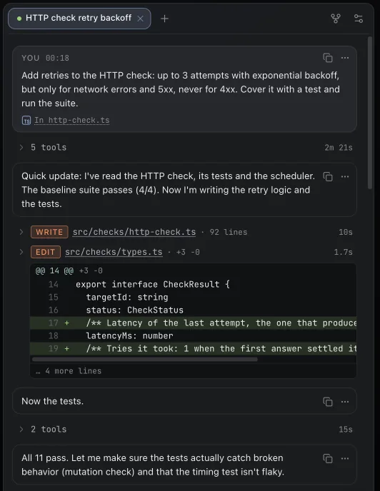

Claude Code, with an interface made for it
Claude works in the panel on the right, and every step shows up as it happens: the files it reads, its edits as diffs, the commands it runs and their output. When a turn ends, you see the files it changed and can roll back one of them or the whole turn.
- Write while it works: your message waits in a queue or reaches Claude at its next step
- Several conversations per project in tabs, with search across all of them
- Permission requests, questions and plans answered with a click
